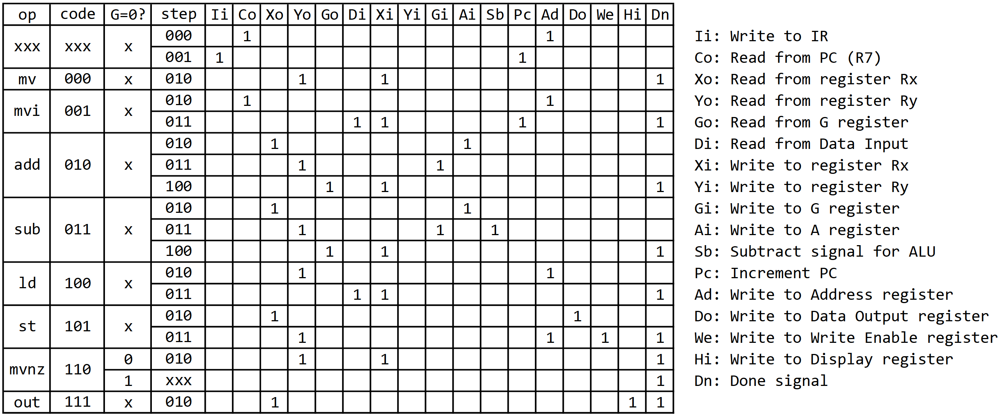
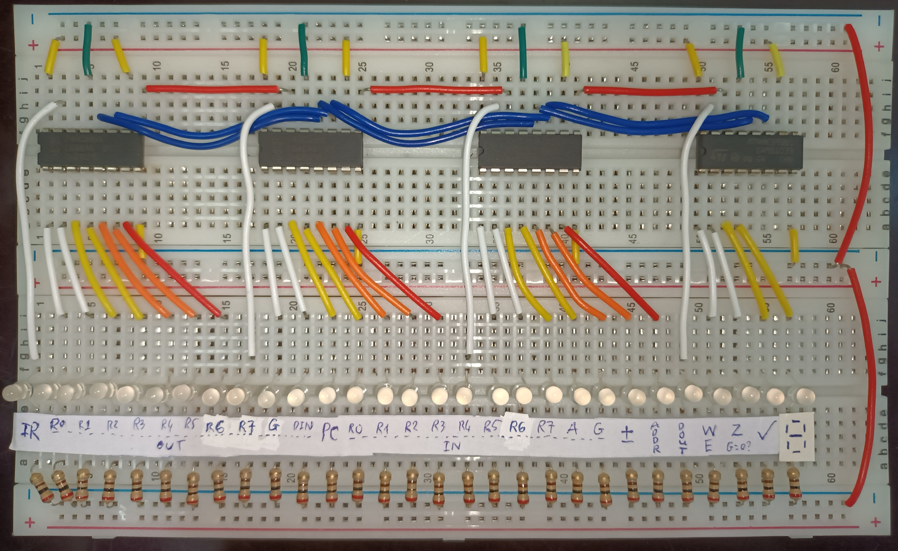
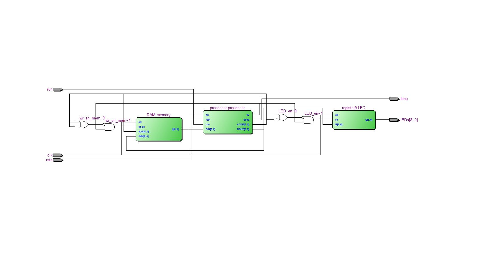
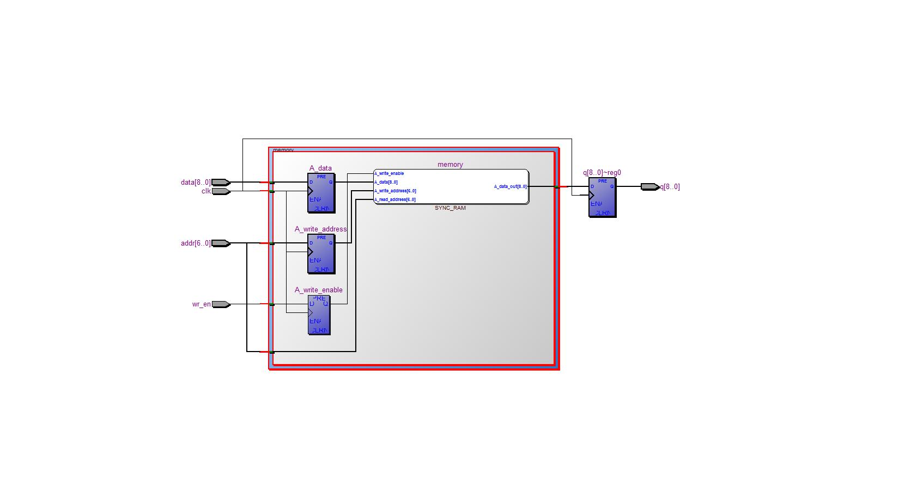
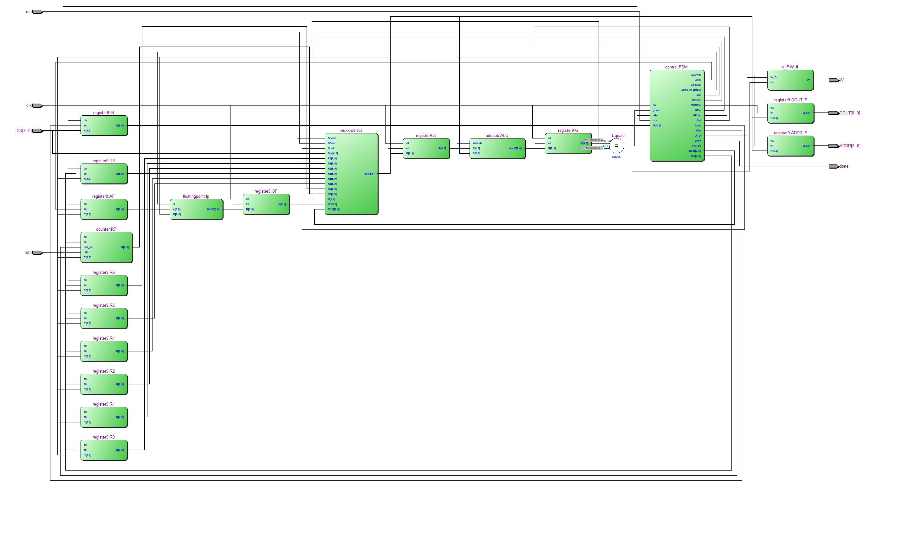
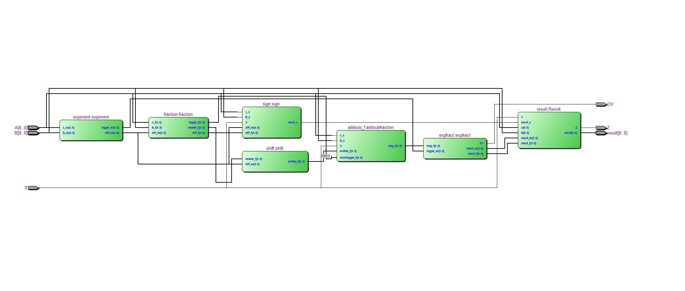
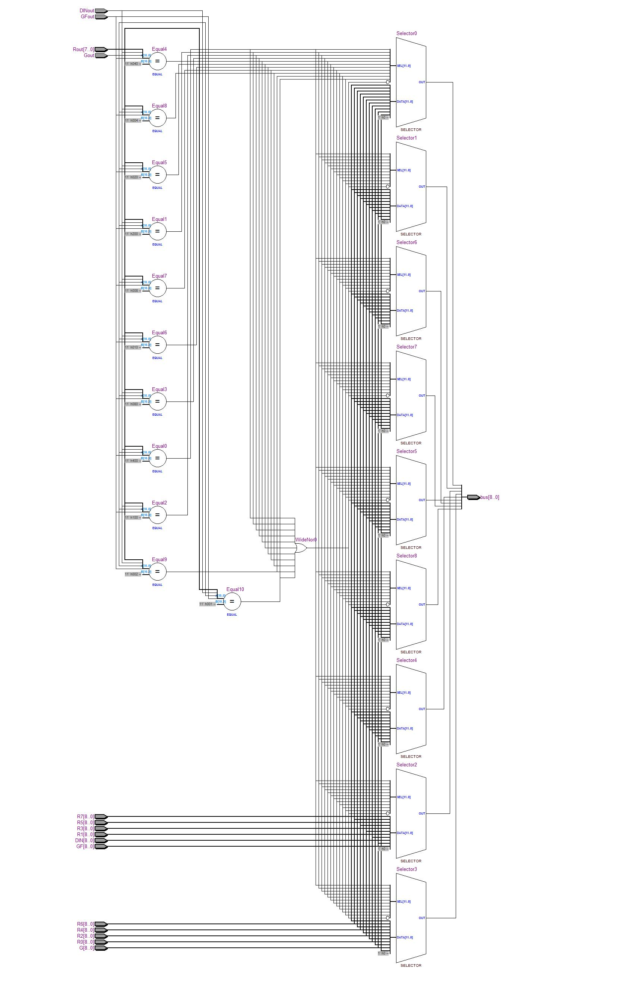
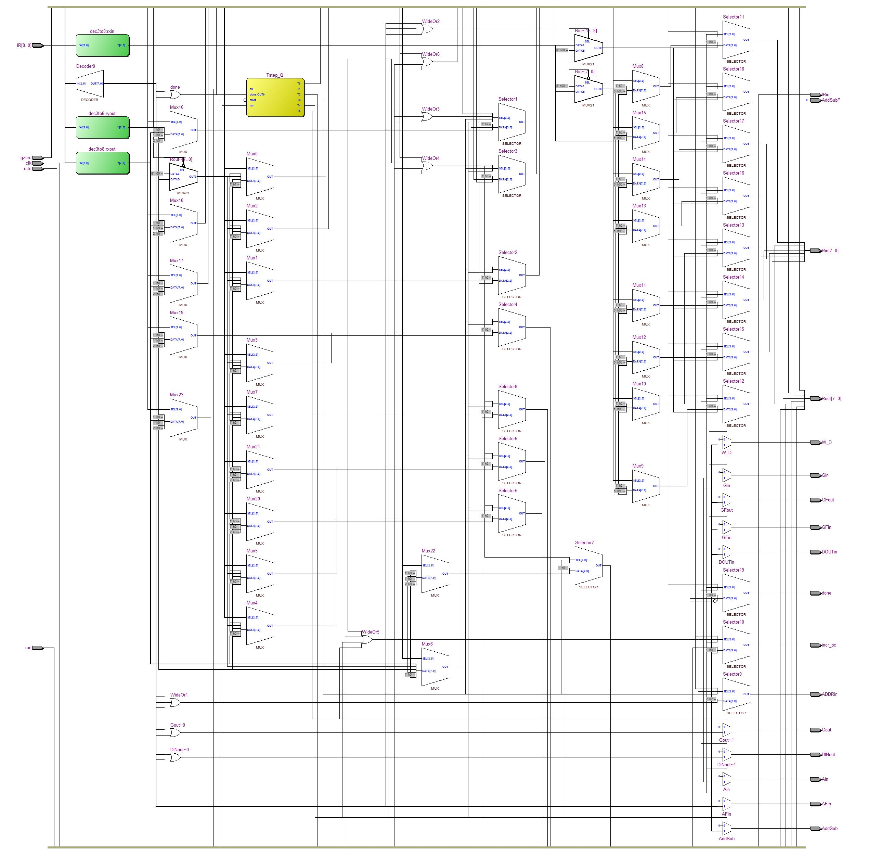

Complete instruction set
Summary
Note: Dashed (-) bit means "don't care".
| Code | Operation | Meaning | Description |
|---|---|---|---|
| 000xxxyyy | MV Rx, Ry | Rx <- [Ry] | Copy content of Ry to Rx. |
| 001xxx--- | MVI Rx | Rx <- mem[PC+1] | Fetch RAM data from address PC+1, then load into Rx. |
| 010xxxyyy | ADD Rx, Ry | Rx <- [Rx] + [Ry] | Add contents of Rx and Ry together, then put the result back to Rx. |
| 011xxxyyy | SUB Rx, Ry | Rx <- [Rx] - [Ry] | Subtract content of Ry from Rx, then put the result back to Rx. |
| 100xxxyyy | LD Rx, Ry | Rx <- mem[[Ry]] | Load data into Rx from the RAM address specified in Ry. |
| 101xxxyyy | ST Rx, Ry | mem[Ry] <- [Rx] | Store data contained in Rx into RAM address found in Ry. |
| 110xxxyyy | MVNZ Rx, Ry | if G != 0, Rx <- [Ry] | Perform MV Rx, Ry only when G register is not zero. Otherwise, do nothing. |
| 111xxx--- | OUT Rx | HEX[2..0] <- [Rx] | Output content of Rx to three 7-segment displays in octal (base-8). |
Details
Note: For better appearance, zeroes are replaced with blank cells.
The debugger, a.k.a the visualizer
The debugger folder have the exact same files as the root folder, plus some extra components to aid in outputting all register contents, RAM contents, and control signals to DE10-Standard's GPIOs. Since there are only 36 GPIO pins while the total number of outputs is 162 (13 x 9-bit registers + 29 control signals + 7 RAM address bits + 9 RAM content bits), I have to put together some external components to do the trick.

First off, the register contents. I soldered 117 LEDs into a 9 x 13 matrix, with 9 anodes each column connected, and 13 cathodes each row connected. An inverted ring counter loops through one row at time at super high speed, while the when else block at the end of the top-level entity determines which register will be outputted to the columns of each row.
Outputting control signals and RAM stuff is slightly more complicated. The parallel-to-serial converter utilizes DE10-Standard's internal 50 MHz clock to continuously generate three lines of serial data: data input, shift clock, and output clock, which will then feed into respective inputs of one 74HC595 IC, which is chained together with more 74HC595's to turn the serial data back to parallel, forming a 3-to-29 converter for control signals, and 3-to-16 for RAM.
     